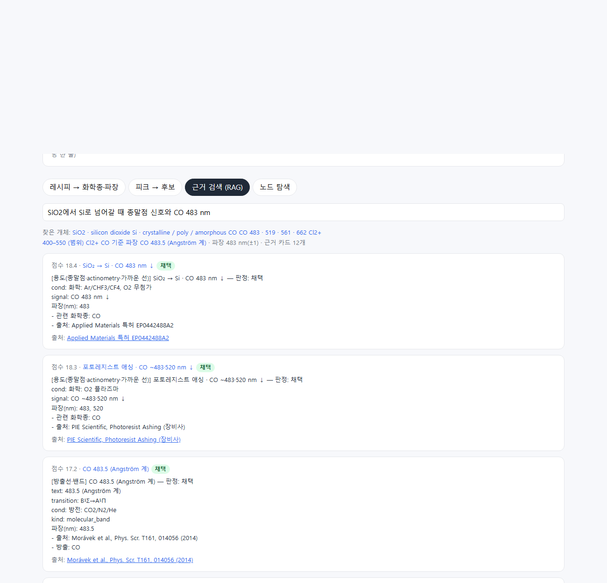
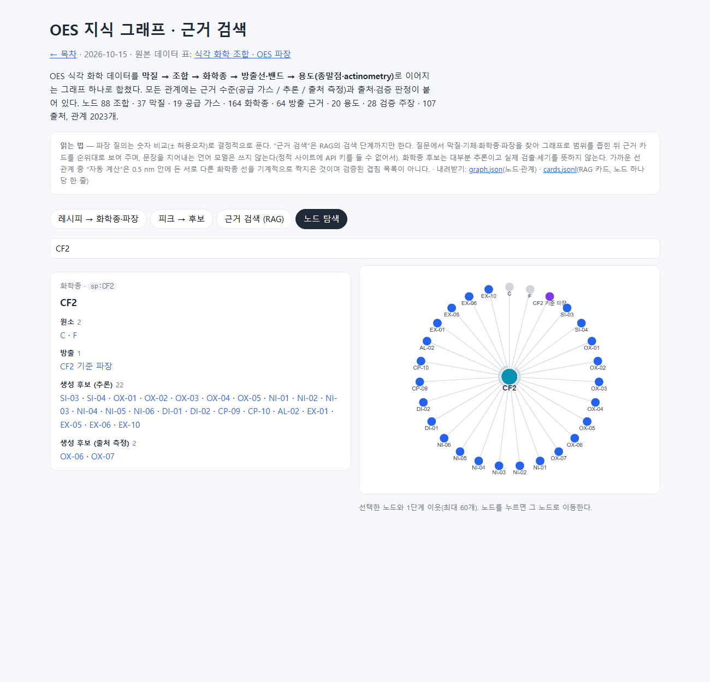

항목 #56–#58 · 2026-10-15 21:26 ~ 21:56 · OES 식각 화학 데이터(조합·화학종·방출선·용도·근거)를 지식 그래프와 RAG로 구조화한다.
#56
OES 데이터셋을 지식 그래프·RAG로 구조화하는 방법 (설계 질문)
지시 (원문)
OES 관련 전체 데이터셋을 좀 더 짜임새 있게 Knowledge Graph 혹은 Knowledge RaG 형태로 표현하려면 어떻게 해야할까?
분석 (Claude의 정리)
구현 지시가 아니라 방법을 묻는 질문이다. 현재 데이터의 구성을 세고, 구조 선택은 jev에게 물어 설계안으로 답한다.
현재 데이터: 조합 88, 막질 38, 공급 가스 19, 화학종 146, 조합-화학종 연결 1,010, 기준선 40, 보완 원자선 25원소, 분자 방출 22, 종말점 사례 11, actinometry 6쌍, 가까운 선 3, 출처 46. 원본이 다섯 곳에 흩어져 있다(비공개 앱 데이터, combos_extra, bands_extra, oes_supplement, 검증 결과).
과정
생성된 OES 페이지와 원본 파일에서 데이터 구성을 셌다.
jev에게 세 가지를 물었다.
· 구조: 지식 그래프를 단일 원본으로 두고 RAG는 그래프 이웃을 검색 범위로 쓰는 하이브리드(GraphRAG). 파장 매칭 같은 수치 질의는 결정적으로 처리한다(1.0).
· 이번 응답: 설계안만 답하고 구현은 사용자 결정 뒤에(1.0).
· 기록 단계: 새 14단계(0.81).
모두 따랐다.
설계안을 답했다.
· 스키마: 막질·가스·조합·화학종·방출선·용도·주장·출처 노드. 관계마다 근거 수준(공급/추론/측정)과 검증 판정을 단다.
· 그래프가 답해야 할 질문 5가지: 레시피→파장, 피크→후보(±오차, 겹침 경고), 경계→종말점 신호 방향, actinometry 쌍, 근거 추적.
· RAG: 노드 카드 단위 문서, 개체 추출 → 그래프로 범위 좁힘 → 텍스트 검색, 모든 문장에 주장 ID를 단다.
· 4단계 계획: 원본 통합 → 보기·질의 도구 → RAG 내보내기 → 평가 문항 회귀 시험. 일반 임베딩 RAG만 쓰지 않는 이유(수치 질의, 근거 분리)도 적었다.
결과 / 증거
답변 설계안만 제시했다(구현 없음). 사용자가 정할 것: 1단계(원본 통합) 착수 여부, 그래프에 비공개 앱 조합 67개를 그대로 넣을지, RAG를 이 사이트와 비공개 앱 중 어디에 둘지. 결과물이 없어 스크린샷은 없다.
#57
OES 지식 그래프·근거 검색 구현 (보안 검토 포함)
지시 (원문)
비공개 앱 조합에 보안상 문제되는 정보가 없다면 넣는다. RAG 또한 보안 문제 검토하고 양호 시 이 사이트에 둔다.
분석 (Claude의 정리)
#56 설계의 결정 두 가지에 대한 답이다. (1) 비공개 앱 조합 67개를 그래프 원본에 넣을지, (2) RAG를 어디에 둘지. 둘 다 보안 검토가 조건이다.
검토가 양호하면 설계의 1–4단계를 진행한다: 원본 통합 → 보기·질의 → RAG 카드 내보내기 → 시험 문항.
과정
앱 데이터 보안 검토(etch_knowledge.json·spectra.json).
· 모든 문자열에 메일·IP·Windows/홈 경로·키·토큰·비밀번호·localhost·내부 주소 패턴을 걸었다. 걸린 것 0건.
· 링크 도메인은 모두 공개 학술·장비사·NIST였다.
· 아직 공개하지 않았던 필드도 확인했다. 공정 조건(압력·전력·온도)은 67개 모두 비어 있었다(null). 잔류물·막 메모·근거 범위·생성 경로는 일반 화학 정보였다.
· 판단: 양호. 빈 공정 조건과 검색용 파생 문자열만 빼고 kb/oes/app/에 공개 사본을 만들었다. 챗 설정·위키 색인 등 앱의 다른 파일은 넣지 않았다.
RAG 보안 검토. 이 저장소에는 서버(worker)가 없고 사이트는 GitHub Pages 정적 페이지다.
· 언어 모델 생성 단계를 넣으려면 API 키가 브라우저에 노출되므로 두지 않았다. 사이트에는 검색 단계(그래프 질의 + 근거 카드 순위)까지만 둔다.
· 페이지는 외부 요청·저장소·eval을 쓰지 않는다. 동적으로 넣는 값은 모두 escape하고, 질의에서 만드는 정규식도 escape했다.
· 링크가 모두 http(s)로 시작하는지를 그래프 검사에 넣었다.
· 판단: 양호. 사이트에 둔다.
#47 검증 결과(data/oes/, #54에서 복원)도 kb/oes/verify/로 옮겼다. OES 페이지 생성기가 기본값으로 kb/oes/를 읽게 바꿨다. 생성 결과는 원래 페이지와 바이트 단위로 같았다. 이로써 OES 페이지가 다른 결과물처럼 build·CI 대상이 됐다(이전에는 비공개 데이터가 있어야 만들 수 있었다).
그래프 변환기 tools/oes_graph.py를 만들었다. 원본 다섯 곳을 노드·관계 하나로 합친다.
· 결과: 조합 88, 막질 37, 공급 가스 19, 화학종 164, 방출 근거 64, 용도 20, 검증 주장 28, 출처 107, 원소 30. 관계 2,023개
· 관계마다 근거 수준(공급/추론/출처 측정)과 판정을 단다.
· 0.5 nm 안의 서로 다른 화학종 선은 "가까운 선(자동 계산)" 32쌍으로 따로 표시했다(검증 목록 아님).
원소 보존 검사(추론 후보의 원소는 막질·공급 가스 원소 안에 있어야 함)가 실제 오류 1건을 잡았다. #54에서 추가한 EX-07(Ge, Cl2/N2) 후보에 SiCl4·SiCl2가 있었다. 원 연구가 poly-Si/poly-Ge 적층이라 섞여 들어간 것이어서 Ge 막질 조합에서 뺐다. 다시 검사하니 경고 0.
페이지 research/oes_knowledge_graph.html를 만들었다. 데이터를 내장하고 기능 네 가지를 넣었다.
· 레시피 → 화학종·파장
· 피크 → 후보(± 허용오차, 여러 화학종이 걸리면 경고)
· 근거 검색(질문에서 개체·파장을 찾아 그래프로 좁힌 뒤 BM25로 카드 순위)
· 노드 탐색(속성·관계·출처, 1단계 관계 그림) research/oes_kg/graph.json과 cards.jsonl(노드 하나당 카드 한 줄, 근거 포함)을 내려받을 수 있게 했다. 목차에도 넣었다.
build 문제 두 가지를 고쳤다.
· 목차가 새 페이지보다 먼저 만들어져 "없는 페이지" 오류가 났다. 목차와 논문 요약(쓰인 곳을 다른 결과물에서 계산)을 build 순서 뒤로 옮겼다.
· 실행마다 그래프 내용이 달라졌다. 화학종 이름을 길이로만 정렬해서 같은 길이일 때 순서가 무작위였다. 정렬 기준을 고정하자 세 번 연속 결과가 같았다.
브라우저로 네 기능을 확인했다(SiN+CH3F 레시피, 337.1 nm 피크, "SiO2→Si 종말점·CO 483 nm" 검색, CF2 노드). 레시피 결과에서 반올림 뒤 중복으로 보이던 파장을 하나로 합쳤다.
결과: build_site.py --check 일치, 링크 32개 페이지 문제 0, 요약 연결 빠진 곳 0, 그래프 검사 오류 0·시험 21/21. 규칙(CLAUDE.md)과 절차서(§5)를 갱신했다.
커밋하려다 .gitignore의 source/ 규칙(최상위 원문 PDF 폴더용)이 kb/oes/source/까지 막는 것을 발견했다. 규칙은 그대로 두고 폴더 이름을 kb/oes/app/으로 바꿨다. 커밋·푸시 → site-check(OES 그래프 검사 포함)·Pages 성공. 그래프 페이지·graph.json·cards.jsonl·OES 페이지·기록·스크린샷 모두 200 확인.
결과 / 증거
성공 앱 조합과 RAG 모두 보안 검토가 양호해 사이트에 넣었다. OES 데이터가 하나의 지식 그래프가 됐고, 그 위에 질의 도구와 근거 검색(검색 단계)이 생겼다. OES 페이지도 이제 build와 CI가 관리한다.
언어 모델이 답을 쓰는 생성 단계는 정적 사이트에 두지 않았다(키 노출). 필요하면 서버 쪽(예: 비공개 OES Assistant 앱)에서 cards.jsonl을 근거로 쓰면 된다.
남은 한계: 화학종 후보 대부분은 추론이다. 자동 계산한 가까운 선은 검증 목록이 아니다. 근거 검색의 개체 인식은 사전 일치 방식이라 표현이 많이 다르면 놓칠 수 있다.
history_img/20261015_214003_oes_kg_peak.png — 피크 → 후보 (337.1 ± 0.5 nm): N2·GaCl·BF 등 여러 화학종 경고와 근거

history_img/20261015_214003_oes_kg_search.png — 근거 검색: "SiO2→Si 종말점·CO 483 nm" → 종말점 카드(CO 483 nm ↓)가 첫 번째

history_img/20261015_214003_oes_kg_explore.png — 노드 탐색: CF2의 원소·방출·생성 후보 조합(추론/출처 측정)과 관계 그림
#58
지식 그래프만으로 종말점(EPD)을 설계할 수 있는가 (질문·시험)
지시 (원문)
위 지식 그래프 많으로 특정 레시피/막질 조합에서 End Point를 설계할 수 있을까?
분석 (Claude의 정리)
가능 여부를 묻는 질문이다. 말로만 답하지 않고, 그래프의 검증된 종말점 사례를 정답으로 두고 간단한 원소 비교 규칙이 그 답을 다시 찾는지 시험한 뒤 답한다(구현은 하지 않음).
과정
비공개 작업 폴더에서 시험 규칙을 돌렸다: 윗막에만 있는 원소의 생성물은 감소, 아랫막에만 있는 원소의 화학종과 식각제 라디칼은 증가, 공급 가스에 있는 원소는 제외, 파장 근거가 있는 것만.
종말점 사례 7건 결과: 맞힘 2(SiO2→Si의 CO ↓, W 에치백의 F ↑), 부분 3(Si3N4→SiO2는 CO ↑를 놓침 — O가 공급 가스에도 있음, Al→TiN은 Al 원자선 대신 AlCl, TiN→Si는 Si ↑만), 놓침 2(AlGaN→GaN — 조합 후보에 Al 계열 없음, poly-Si→SiO2 — 같은 원소라 선택비 정보가 필요).
답했다: 그래프로는 후보 신호를 고르는 가설 단계까지 가능하다. 설계에는 아랫막·선택비·신호 세기와 배경·개구율·실제 OES 시계열이 필요하다. "종말점 후보" 도구(입력: 윗막·아랫막·가스, 출력: 감소/증가/제외 신호와 근거 등급·겹침 경고, 막 원소 원자선 자동 보강, 위 시험을 회귀 시험으로)를 제안했다.
결과 / 증거
답변 시험 7건 중 맞힘 2·부분 3·놓침 2. 놓친 원인은 데이터 빈칸(막 원소 원자선 누락)과 그래프에 없는 정보(선택비)로 구분된다. 구현은 사용자 결정 뒤에 한다. 결과물이 없어 스크린샷은 없다.